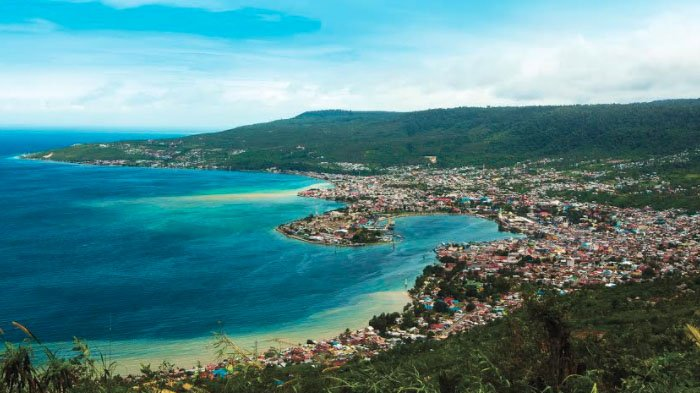
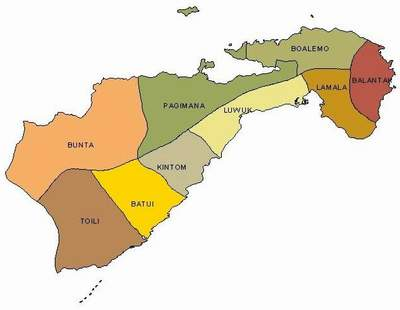
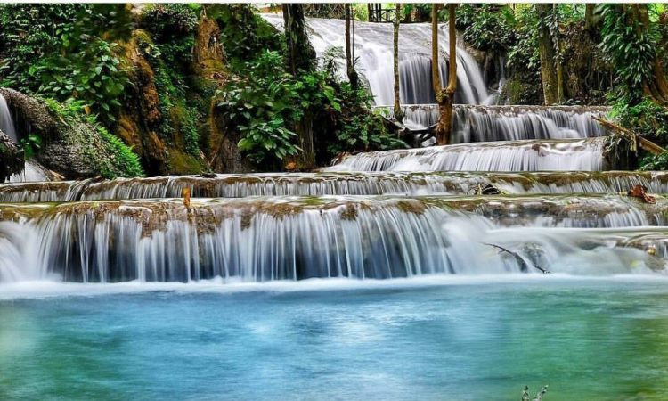
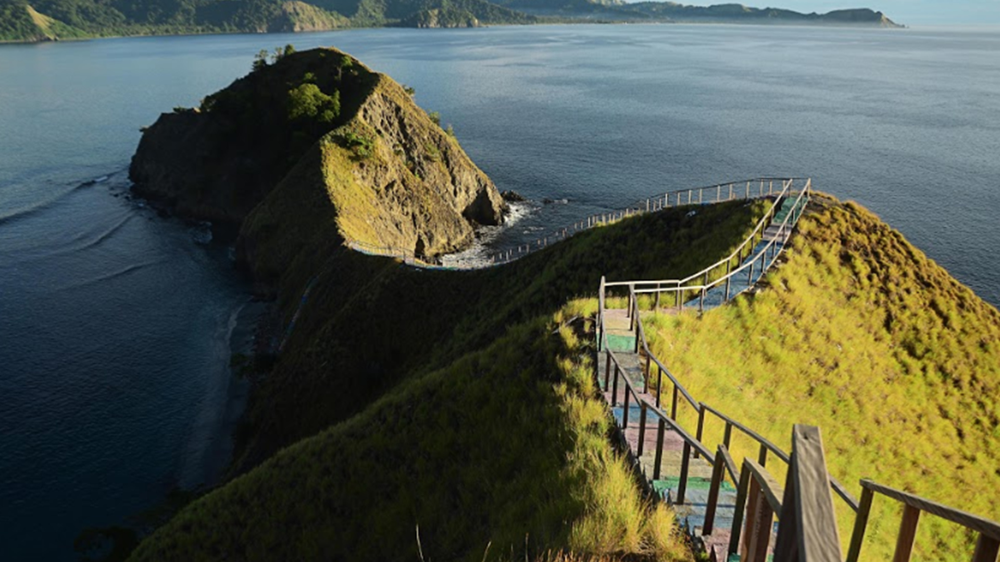

Kota Luwuk adalah sebuah kecamatan sekaligus pusat pemerintahan dari Kabupaten Banggai, provinsi Sulawesi
Tengah, Indonesia.
Luwuk berjarak 610 kilometer dari kota Palu, ibu kota provinsi Sulawesi Tengah.
Sejarah

Secara etimologi, Luwuk dari asal kata Luwok, Huk, yang artinya "Teluk". Sebelum menjadi nama
Kota Luwuk, wilayah ini
merupakan pelabuhan masyarakat Keleke, Asam Jawa dan Soho serta Dongkalan. Dalam perjalanan
Pemerintahan, Luwuk
ditetapkan menjadi pusat pemerintahan oleh Hindia Belanda pada tahun 1906, ibu
kota Afdeling
Sulawesi Bagian Timur,
kemudian tahun 1908 dipindahkan ke Bau-Bau,
Luwuk menjadi pusat wilayah
onderafdeling pada tahun
1924.
Geografi

Luwuk memiliki luas sebesar 59,00 kilometer persegi. Lokasinya berada di lembah antara dua
Pegunungan Paka dan Pegunungan Pongoti. Keadaan tanah di wilayah Luwuk bagian selatan terdiri
atas tanah liat yanh berpasir dan kapur kerang. Sementara itu, di daerah pegunungan khususnya
Keleke dan Mangkin Piala, jenis tanahnya adalah neoin. Tanah didaerah pegunungan dijadikan lahan
perkebunan karena curah hujan rata-rata berkisar antara 955-1.723 mm per tahun. Arah hembusan
angin wilayah Luwuk memiliki iri khas tertentu. Setiap bulan Maret hinggan bulan Mei, angin
bertiup ke arah timur. Pada bulan Juni dan Juli, angin bertiup ke arah barat. Angin beritup ke
arah selatan antara bulan Agustus hingga bulan Oktober bertiup angin Selatan. Pada bulan
November hingga Desember, angin bertiup ke arah tenggara yang menyebabkan musim kemarau
Wisata
Air terjun Salodik

Air Terjun Salodik memiliki ketinggian 750 hingga 1000 mdpl yang menjadikannya sebagai
kawasan wisata yang sejuk dan
bisa dikunjungi terutama ketika berlibur bersama keluarga. Sungainya berwarna jernih, hijau
keabu-abuan serta adanya
suasana yang sejuk dan segar. Siapapun bisa berenang dan berendam berlama-lama yang ada di
dalamnya. Air terjun ini akan
mengalir secara bersusun dan tidak ada habisnya bahkan ketika kemarau.
Wisata ini berada di Desa Salodik, kecamatan Luwuk, Kabupaten Banggi. Tepatnya berada di
Provinsi Sulawesi Tengah yang
cukup mudah untuk menjangkau Air Terjun Salodik untuk pengunjung manapun.
Pantai Kilo Lima
Destinasi berikutnya adalah Pantai Kilo Lima. Destinasi ini memang masih jarang dijamah turis
karena tempat ini masih
begitu terjaga. Pantai ini membentang di garis terdepan kota Luwuk. Adanya nama Pantai Kilo
Lima ini memiliki arti
tersendiri. Kilo Lima artinya adanya 5 KM dari Luwuk. Pesona dari pantai ini karena
kebersihannya yang masih begitu
terjaga. Tak heran jika memang banyak pengunjung yang datang untuk bersantai dan menikmati
waktu berlibur di pantai yang
masih terjaga keasriannya ini.
Pulau Dua Balantak

Objek wisata Pulau Dua Balantak ini merupakan maskot dari pariwisata Kabupaten Banggai.
Memang seperti objek wisata
lainnya, pulau ini memiliki pemandangan yang cantik seperti adanya gunung batu yang tumbuh
dari bawah laut dan adanya
pasir putih di sekeliling pantai serta pepohonan yang berbaris rapi. Suasana ini memang
penuh dengan ketenangan dan juga
kesejukan